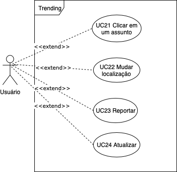

Caso de Uso - Trending Topics

Autores: Erick, Fernando Versão: 0.1
Especificações
UC021 - Clicar em um Assunto
| Descrição | O usuário é capaz de abrir um tópico em destaque |
| Ator(es) | Usuário |
| Pré-Condições | * Deve haver tópicos * O tópico deve estar entre os mais populares na localização |
| Pós-Condições | O sistema abrirá a página com tweets relacionados ao tópico |
| Fluxo Principal | [FP21] Este fluxo se inicia quando o usuário escolhe um dos tópicos 1. Ele abre o aplicativo do twitter 2. Ele clica na aba buscar 3. Ele seleciona trending 4. Ele clica no tópico |
| Fluxo(s) Alternativos | * [FA21-A] O usuário não clica em nenhum tópico * [FA21-B] O usuário reporta o tópico |
| Fluxo(s) de exceção | [FE21] O sistema apresenta uma mensagem de erros e atualiza a página |
UC22 - Mudar Localização
| Descrição | O usuário pode mudar a localização dele no aplicativo para conseguir visualizar trending topics relevantes daquela região |
| Ator(es) | Usuário |
| Pré-Condições | * Sistema está funcionando |
| Pós-Condições | * O app volta para a tela anterior * O usuário clica em "done" |
| Fluxo Principal | [FP22] Esse fluxo se inicia quando o usuário, a partir da tela "trending", clica no ícone de engrenagem no canto superior direito e seleciona a opção de mudar localização. A partir daí ele escolhe o novo local e depois conclui a tarefa clicando no ícone de concluído |
| Fluxo(s) Alternativos | * [FA22-A] O usuário seleciona o ícone da engrenagem, mas em seguida clica em voltar * [FA22-B] O usuário seleciona a engrenagem, depois clica em mudar localização mas não muda efetivamente, e volta para a aba anterior |
| Fluxo(s) de exceção | FE22] O sistema apresenta uma mensagem de erros e atualiza a página |
UC23 - Reportar
| Descrição | O usuário pode reportar um trend(assunto) de forma a classificá-lo como spam, abusivo, réplica ,não relevante ou baixa qualidade |
| Ator(es) | Usuário |
| Pré-Condições | * Existir um tweet * Sistema deve estar no ar |
| Pós-Condições | * O tweet será investigado pelo Twitter * Usuário continua a navegar * Usuário pode bloquear o autor do tweet |
| Fluxo Principal | [FP23] Esse fluxo se inicia quando o usuário seleciona a opção de reportar um assunto, a partir da tela "trending", então escolhe a categoria a qual quer reportar |
| Fluxo(s) Alternativos | [FA23] O usuário seleciona a opção de reportar mas, logo em seguida, volta à tela anterior |
| Fluxo(s) de exceção | [FE23] O sistema apresenta uma mensagem de erros e atualiza a página |
UC24 - Atualizar
| Descrição | O usuário pode deslizar a tela para baixo e, dessa forma, forçar a atualização da tela "trending" |
| Ator(es) | Usuário |
| Pré-Condições | * App está funcionando |
| Pós-Condições | * A tela está atualizada * Usuário continua a navegação |
| Fluxo Principal | [FP24] O usuário desliza a tela para baixo e a tela é atualizada |
| Fluxo(s) Alternativos | [FA24] O usuário não atualiza a tela porque o sistema faz isso automaticamente |
| Fluxo(s) de exceção | [FE24] O sistema apresenta uma mensagem de erros e atualiza a página |
Autores: Erick, Fernando Versão: 0.1
Versionamento de edições desta página
| Data | Autor | Descrição | Versão |
|---|---|---|---|
| 26/09/2019 | Fernando Aguilar | Criação da página | 0.1 |
| 27/09/2019 | Erick Giffoni | - Melhorias na página - Adição de mais especificações | 0.2 |
| 27/09/2019 | Erick Giffoni e Fernando Aguilar | Adição de mais especificações | 0.3 |